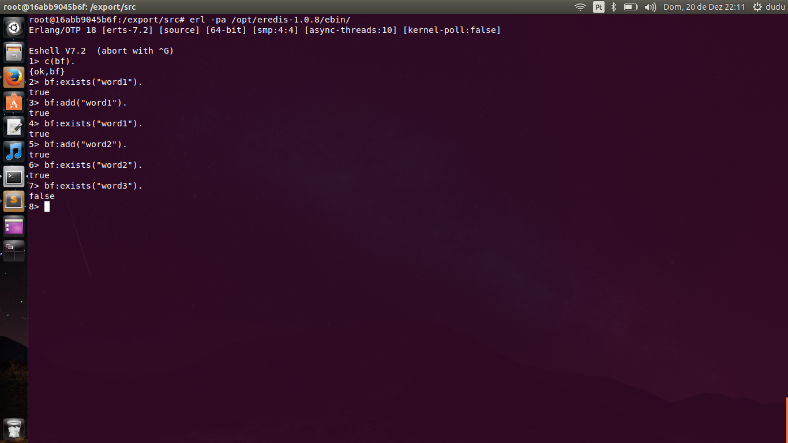

A Bloom filter is a space-efficient probabilistic data structure, conceived by Burton Howard Bloom in 1970, that is used to test whether an element is a member of a set Wikipedia.
In order to create a Bloom filter, we need a uniformly distributed, independently and fast/eficient hash function. The erlang:phash2/1,2 is a BIF of the hash function suggested by Bob Jenkins that satisfies this properties.
In this post I’ll show you a basic Bloom filter implementation in Erlang and Redis. You can use it almost on everything with small improvements/changes (e.g., database records, user names, e-mails, words).
Let’s say we have 2 million elements and can live with a 0.001 probability of false positives (hash collisions can happen). Based on the Bloom filter calculator, we’ll need 10 different hashes per element and 28,755,176 bits (3.43MB) to represent our entire data.
It’s a good idea (or a must if you are designing production ready distributed systems) to maintain the Bloom filter easy accessible for a cluster. For this, we’ll use Redis (an in-memory data structure store) and wooga/eredis (Erlang Redis Client). Redis already have operations like SETBIT and GETBIT on a key at a specified position.
In the code below, you can check the implemented functions:
* positions/1: returns a list with K=10 different hashes based on the Element + increment;
* add/1: add Element using Redis SETBIT command;
* exists/1: check if Element exists using Redis GETBIT command;
* hash/1: wrapper for erlang:phash2 of the Element converted to binary.
-module(bf).
-export([add/1, exists/1]).
% p=0.001 and 2 mi elements
-define(N_HASH, 10).
-define(N_BITS, 28755176).
positions(Elem) ->
positions([], Elem).
hash(Elem) ->
erlang:phash2(term_to_binary(Elem), ?N_BITS).
positions(_Elem, Positions) when length(Positions) =:= ?N_HASH ->
Positions;
positions(Elem, Positions) ->
positions(Elem, [hash({Elem, length(Positions)}) | Positions]).
add(Elem) ->
{ok, C} = eredis:start_link("localhost", 6379),
Positions = positions(Elem),
Res = eredis:qp(C, [["SETBIT", "bf", N, 1] || N <- Positions ]),
lists:foldl(fun(
{ok, _}, Acc) -> Acc and true;
(_, _) -> false
end, true, Res).
exists(Elem) ->
{ok, C} = eredis:start_link("localhost", 6379),
Positions = positions(Elem),
Res = eredis:qp(C, [ ["GETBIT", "bf", N] || N <- Positions]),
lists:foldl(fun(
{ok, <<"1">>}, Acc) -> Acc and true;
(_, _) -> false
end, true, Res).
For the purpose of this example, we’ll install the redis-server on the same machine that our application is running (typically that is not good for production environment). All you need is Docker 1.9.1.
# Docker needs sudo
sudo -s
# Start erlang docker container
docker run -it ecolabardini/erlang /bin/bash
# Install wooga/eredis
cd /opt
wget https://github.com/wooga/eredis/archive/v1.0.8.tar.gz
tar xvfz v1.0.8.tar.gz
cd eredis-1.0.8/
./rebar compile
# Install and start redis-server
apt-get install redis-server -y
service redis-server start
With all set, we can start our BF example. Execute this inside the interactive bash provided by the docker container:
# Download bf.erl from Amazon S3
cd ~
wget https://s3-us-west-2.amazonaws.com/ecolabardini/bf.erl
# Start erl with eredis
erl -pa /opt/eredis-1.0.8/ebin/
Now you can compile and test the BF freely, for instance:
c(bf).
bf:add("word1").
bf:add("word2").
bf:exists("word1").
bf:exists("word2").
bf:exists("word3"). % should return false
Print-screen of my execution:

Note that deletion operations on Bloom filters are not allowed. If you do that, there’s a high probability you’ll remove bits that also belongs to other elements.